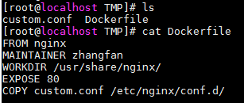

原文连接:https://www.cnblogs.com/leozhanggg/p/12039953.html
>>> 目录 <<<
- Docker简介
- Docker优势
- Docker基本概念
- Docker安装使用
- Docker常用命令
- Docker镜像构建
- Docker本地仓库
- Docker图形管理工具Portainer
- Docker集群管理工具Swarm
- Docker运维流程图
- Docker配置管理
- Docker后续问题
- Docker报错解决
>>> 正文 <<<
一、 Docker简介
Docker是一个开源的应用容器引擎，开发者可以打包自己的应用到容器里面，然后迁移到其他机器的docker应用中，可以实现快速部署。
简单的理解，docker就是一个软件集装箱化平台，就像船只、火车、卡车运输集装箱而不论其内部的货物一样，软件容器充当软件部署的标准单元，其中可以包含不同的代码和依赖项。
按照这种方式容器化软件，开发人员和 IT 专业人员只需进行极少修改或不修改，即可将其部署到不同的环境，如果出现的故障，也可以通过镜像，快速恢复服务。
二、 Docker优势
1. 特性优势

2. 资源优势
三、 Docker基本概念
Client（客户端）：是Docker的用户端，可以接受用户命令和配置标识，并与Docker daemon通信。
Images（镜像）：是一个只读模板，含创建Docker容器的说明，它与操作系统的安装光盘有点像。
Containers（容器）：镜像的运行实例，镜像与容器的关系类比面向对象中的类和对象。
Registry（仓库）：是一个集中存储与分发镜像的服务。最常用的Registry是官方的Docker Hub 。

四、 Docker安装使用
-
操作系统：CentOS 7
1、安装依赖
yum install -y yum-utils device-mapper-persistent-data lvm2
2、添加软件源
yum-config-manager --add-repo http://mirrors.aliyun.com/docker-ce/linux/centos/docker-ce.repo # 指定阿里云镜像源
3、安装docker-ce（对系统内核有一定要求，centos6不支持）
yum clean all yum makecache fast # 重新生成缓存
yum -y install docker-ce docker-ce-cli containerd.io
4、设置自启并启动
systemctl enable docker
systemctl start docker
5、查看版本
docker version

-
运行示例：Nginx
1、搜索并下载镜像
docker search nginx
docker pull nginx
2、启动一个容器并映射端口到本地
docker run -d -p 8080:80 --name Nginx nginx # 参数详解见下文
3、访问本地映射端口

五、 Docker常用命令
1. 镜像控制
搜索镜像：docker search [OPTIONS] TERM
上传镜像：docker push [OPTIONS] NAME[:TAG]
下载镜像：docker pull [OPTIONS] NAME[:TAG]
提交镜像：docker commit [OPTIONS] CONTAINER NAME[:TAG]
构建镜像：docker build [OPTIONS] PATH
删除镜像：docker rmi [OPTIONS] IMAGE [IMAGE...]
增加镜像标签：docker tag SOURCE_IMAGE[:TAG] TARGET_IMAGE[:TAG]
查看所有镜像：docker images [OPTIONS] [REPOSITORY[:TAG]]

2. 容器控制
启动/重启容器：docker start/restart CONTAINER
停止/强停容器：docker stop/ kill CONTAINER
删除容器：docker rm [OPTIONS] CONTAINER [CONTAINER...]
重命名容器：docker rename CONTAINER CONTAINER_NEW
进入容器：docker attach CONTAINER
执行容器命令：docker exec CONTAINER COMMAND
查看容器日志：docker logs [OPTIONS] CONTAINER
查看容器列表：docker ps [OPTIONS]

3. 容器启动
docker run [OPTIONS] IMAGE [COMMAND] [ARG...]
-d : 后台运行容器，并返回容器ID
-i：以交互模式运行容器，通常与 -t 同时使用
-t：为容器重新分配一个伪输入终端，通常与 -i 同时使用
-v：绑定挂载目录
--name="mycontainer": 为容器指定一个名称
--net="bridge": 指定容器的网络连接类型，支持如下：
bridge / host / none / container:<name|id>
-p/-P :端口映射，格式如图：
4. 其他命令
查看docker信息：docker info
docker命令帮助：docker run --help
复制文件到容器：docker cp custom.conf Nginx:/etc/nginx/conf.d/
更新容器启动项：docker container update --restart=always nginx
查看docker日志：tail -f /var/log/messages
>>> 更多可以参考官网：https://docs.docker.com/engine/reference/commandline/cli/

六、 Docker镜像构建
1. Docker commit（1运行2修改3保存）
a） 运行容器
docker run -dit -p 8080:80 --name Nginx nginx
b） 修改容器（这里我只是做个演示，所以就复制一下文件，具体修改需要根据你实际情况）
docker cp custom.conf Nginx:/etc/nginx/conf.d/
c） 将容器保存为新的镜像
docker commit Nginx zwx/nginx

2. Dockerfile（1编写2构建）
a） 编写Dockerfile文件
vim Dockerfile

b） 执行Dockerfile文件
docker build -t zwx/nginx . # 后面有个点，代表当前目录下dockerfile文件

3. Dockerfile 常用指令

>>> 更多可以参考：【转载】Dockerfile文件详解
七、 Docker本地仓库
1、拉取镜像仓库
docker search registry
docker pull registry
2、启动镜像服务
docker run -dit \
--name=Registry \ # 指定容器名称
-p 5000:5000 \ # 仓库默认端口是5000，映射到宿主机，这样可以使用宿主机地址访问
--restart=always \ # 自动重启，这样每次docker重启后仓库容器也会自动启动
--privileged=true \ # 增加安全权限，一般可不加
-v /usr/local/my_registry:/var/lib/registry \ # 把仓库镜像数据保存到宿主机
registry
3、注册https协议（需要通过本地仓库下载镜像，均需要配置）
vim /etc/docker/daemon.json # 默认无此文件，需自行添加，有则追加一下内容。
{ "insecure-registries":[" xx.xx.xx.xx:5000"] } # 指定ip地址或域名
4、新增tag指明仓库地址
docker tag zwx/nginx x.xx.xx.xx:5000/zwx/nginx # 如果构建时已经指定仓库地址，则可以省略
5、上传镜像到本地仓库
docker push x.xx.xx.xx:5000/zwx/nginx
6、查看本地仓库
curl -XGET http://x.xx.xx.xx:5000/v2/_catalog
>>> 更多可以参考：docker 搭建本地私有仓库
八、 Docker与图形管理工具Portainer
1. 简介
Portainer是Docker的图形化管理工具，提供状态显示面板、应用模板快速部署、容器镜像网络数据卷的基本操作（包括上传下载镜像，创建容器等操作）、
事件日志显示、容器控制台操作、Swarm集群和服务等集中管理和操作、登录用户管理和控制等功能。功能十分全面，基本能满足中小型单位对容器管理的全部需求。

2. 安装使用
a） 搜索并下载镜像
docker search portainer
docker pull portainer/portainer
b） 单机方式运行
docker run -d \
-p 9000:9000 \ # portainer默认端口是9000，映射到本地9000端口，通过本地地址访问
--restart=always \ # 设置自动重启
-v /var/run/docker.sock:/var/run/docker.sock \ # 单机必须指定docker.sock
--name Prtainer portainer/portainer
c） 访问http://localhost:9000
首次登陆需要注册用户，给admin用户设置密码，然后单机版选择local连接即可。
d） 控制管理

>>> 更多可以参考：Portainer介绍
九、 Docker与集群管理工具Swarm
1. 简介
Swarm是Docker官方提供的一款集群管理工具，其主要作用是把若干台Docker主机抽象为一个整体，并且通过一个入口统一管理这些Docker主机上的各种Docker资源。

2. 安装使用
Swarm 在 Docker 1.12 版本之前属于一个独立的项目，在 Docker 1.12 版本发布之后，该项目合并到了 Docker 中，成为 Docker 的一个子命令。
a) 启动swarm集群只需要执行初始化命令即可：
docker swarm init \ # 默认初始化节点为管理节点
--advertise-addr xx.xx.xx.xx \ #指定使用的ip
--listen-addr xx.xx.xx.xx:2377 #指定监听ip和port，默认为2377

b) 设置manager节点
docker swarm join-token manager #获取管理节点token，放入下面命令
docker swarm join \
--advertise-addr xx.xx.xx.xx \
--listen-addr xx.xx.xx.xx:2377 \
--token SWMTKN-1-29ynh5uyfiiospy4fsm4pd4xucyji2rn0oj4b4ak4s7a37syf9-ajkrv2ctjr5cmxzuij75tbrmz \
xx.xx.xx.xx:2377
c) 设置worker节点
docker swarm join-token worker #获取工作节点token，放入下面命令
docker swarm join \
--advertise-addr xx.xx.xx.xx \
--listen-addr xx.xx.xx.xx:2377 \
--token SWMTKN-1-29ynh5uyfiiospy4fsm4pd4xucyji2rn0oj4b4ak4s7a37syf9-ajkrv2ctjr5cmxzuij75tbrmz \
xx.xx.xx.xx:2377
c) 查看节点
docker node ls

d) 创建服务
docker service create [OPTIONS] IMAGE [COMMAND] [ARG...]
--detach , -d: 指定容器运行于前台还是后台，默认为false
--name: 服务名称
--network: 网络连接
--publish , -p: 端口映射
--env , -e: 设置环境变量
--tty , -t: 分配tty设备，该可以支持终端登录
--mount: 文件挂载
--replicas: 指定任务数量
>>>更多参考：Docker Swarm集群部署实践 Docker Swarm 常用命令
3. 对比K8s究竟有何异同?
a）出生不同
Google根据其在Linux上容器管理经验，改造到docker管理上，就是kubernetes。他的在许多方面表现良好,最重要的是构造于Google多年的宝贵经验只上。
kubernetes并不是为了docker写的,kubernetes把集群带到了一个全新的高度，代价是学习曲线比较陡。docker-swarm 使用了一个不同的方式,它是docker原生的集群工具。
最方便的部分是它暴露了docker标准的编程接口，意味着你之前一直在使用的任何与docker沟通的工具（docker CLI, docker compose等），都可以无缝的在docker swarm上使用。
b）安装配置不同
安装设置swarm非常简单，简单明了并且很灵活。我们需要做的就是安装一个服务发现工具，然后在所有的节点上安装swarm容器。
相比较而言，kubernetes的安装就有点复杂晦涩了。不同的操作系统上安装都不同。每个操作系统都有自己的独立安装指令。
c）运行方式不同
使用Swarm和使用容器没有什么不同。比如，你习惯于使用Docker CLI（命令行接口），你可以继续使用几乎相同的命令。
如果你习惯于使用Docker Componse来运行容器，你可以继续在Swarm集群中使用。不管你之前习惯于怎么使用容器，你仍旧可以使用，只是在更大级别的集群中使用。
Kubernetes要求你去学习它自己的CLI（命令行接口）和配置。你不能使用你之前创建的docker-compose.yml配置，你必须要去新建与Kubernetes对应的配置。
你也不能使用之前学习的Docker CLI（命令行接口）。你必须要去学习 Kubernetes CLI（命令行接口）
最后，当需要在Docker Swarm 和 Kubernetes做出选择时，可以考虑如下几点：
你是否想依赖于Docker自己来解决集群的问题。如果是，选择Swarm。如果某些功能在Docker中不支持，那它也非常可能在Swarm中找不到，因为Swarm是依赖于Docker API的。
另外一方面，如果你想要一个工具可以解决Docker的限制，Kubernetes将是不错的选择。Kubernetes不是基于Docker，而是基于Google多年对于管理容器的经验。它是按照自己的方式来行事。
十、 Docker运维流程图

十一、 Docker配置管理
1. 用了容器以后，还需要配置管理吗？
起初我们跟Docker官方一样，属于理想主义派。天真的认为容器就应该是inmutable的，当需要配置变更的时候，重新构建镜像重新部署。
基于这一思路，我们在cSphere中添加了个镜像自动构建模块，用户可以配置代码仓库的地址。
服务的配置文件保存于Git或者SVN库中，需要配置变更时，向版本库中Push一下，自动通过hook触发镜像构建，并自动完成线上容器的重建。
通过这套系统，用户可以非常方便的批量更新线上的服务，并不局限于配置文件的变更，代码的变更也天生支持。
经过实际使用，这套系统能够很好的满足开发和测试环境的需求，提升工作效率。
但是，在生产环境中使用的时候，我们发现这种流程其实并不那么完美，主要表现在：
镜像构建和部署虽然自动化了，但构建是针对VCS中的某个仓库的，改一行配置就得整体重新构建一下，在更新容器时还需要把镜像重新分发到所有机器上，配置变更速度太慢。
这种方式的配置变更会涉及到服务的重启，这在生产环境某些场景下是不可接受的 ，有可能引起短暂的服务中断。
2. 应用配置文件应该需要做到什么？
Docker应用配置文件能够保持能够支持针对不同环境作出更改。另外配置文件支持在线更改，重启就生效。一般分为以下两种方式。
a） Docker环境变量
需要在制作镜像的时候就需要提前想好，有哪些参数是部署容器的时候会经常更改，
然后把这些参数抽出来做成容器的环境变量，然后在部署的容器的时候填入不同的参数即可。
但是如果后续发现有一些参数不同场景下部署的时候也会修改，那就需要再重新制作镜像了。
b）应用配置文件
上述的管理方式不太灵活，灵活的管理方式是将配置文件和镜像剥离开，这样就不会被镜像给绑定了。
注：最新版本可以参考docker config命令管理
十二、 Docker后续问题
-
- 集群环境
- 网络安全
- 存储管理
- 日志收集
- 实时监控
- 性能调优
- ……
十三、Docker报错解决
【解决】image ... could not be accessed on a registry to record its digest.
【解决】http: server gave HTTP response to HTTPS client
【解决】OCI runtime exec failed......executable file not found in $PATH": unknown
更多报错解决方案持续更新中：【解决】Docker Errors
☆☆☆☆☆☆☆☆☆☆☆☆☆☆☆☆☆☆☆☆☆☆☆☆☆☆☆☆☆☆☆☆☆☆☆☆☆☆☆☆☆☆☆☆☆☆☆☆☆☆
如果想更详细，更深入了解Docker，推荐 >>> Docker最全教程——从理论到实战(一)
如果转载请注明原文地址，谢谢 >>> https://www.cnblogs.com/leozhanggg/p/12039953.html
☆☆☆☆☆☆☆☆☆☆☆☆☆☆☆☆☆☆☆☆☆☆☆☆☆☆☆☆☆☆☆☆☆☆☆☆☆☆☆☆☆☆☆☆☆☆☆☆☆☆☆